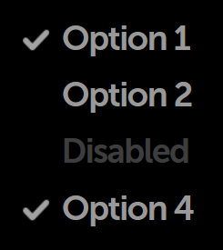
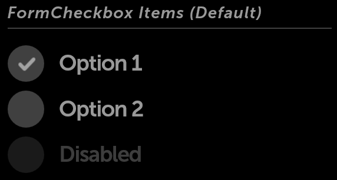

Checkboxes
Behavior
Checkboxes are used to select multiple items from a range of options. In Moonstone, the selected state is represented visually as a checkmark, while the unselected state is the absence of a checkmark (i.e., there is no visual marker).
Single selection from a range of options is implemented via radio items (otherwise known as radio buttons).
enyo.Checkbox
enyo.Checkbox implements an HTML checkbox input, with support for grouping.
The onActivate event is fired when the checkbox is tapped.
The state of the checkbox is available as a boolean (true if checked; false if not) in the checked property.
moon.Checkbox and moon.CheckboxItem
moon.Checkbox extends enyo.Checkbox, adding Moonstone visual styling.
Instead of creating moon.Checkbox objects directly, you may find it convenient to use the moon.CheckboxItem kind, which combines a checkbox with a text label, as in this example taken from the Enyo Sampler:
components: [
{classes: "checkbox-sample-wrapper", components: [
{kind: "moon.CheckboxItem", content: "Option 1", checked: true},
{kind: "moon.CheckboxItem", content: "Option 2"},
{kind: "moon.CheckboxItem", disabled: true, content: "Disabled"},
{kind: "moon.CheckboxItem", content: "Option 4", checked: true}
]}
]
moon.FormCheckbox
moon.FormCheckbox extends moon.Checkbox, providing a labeled checkbox (similar to moon.CheckboxItem) for use in form layouts. Unlike moon.CheckboxItem, moon.FormCheckbox has a circular “tap target” area that is always visible, regardless of whether the checkbox is currently checked.
components: [
{kind: "moon.Divider", content: "FormCheckbox Items (Default)"},
{kind: "moon.FormCheckbox", content: "Option 1", checked: true,
onchange: "itemChanged"},
{kind: "moon.FormCheckbox", content: "Option 2", onchange: "itemChanged"},
{kind: "moon.FormCheckbox", disabled: true, content: "Disabled",
onchange: "itemChanged"}
]